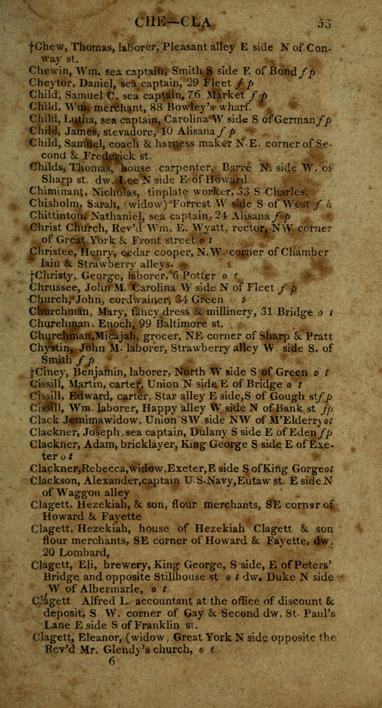
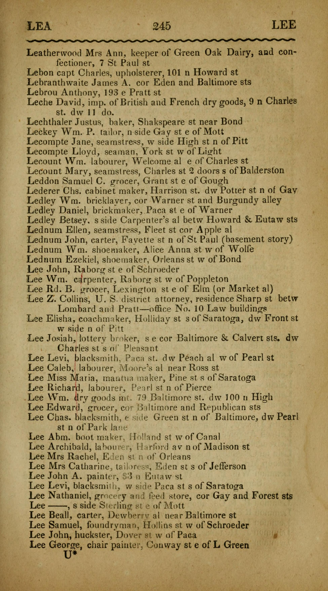
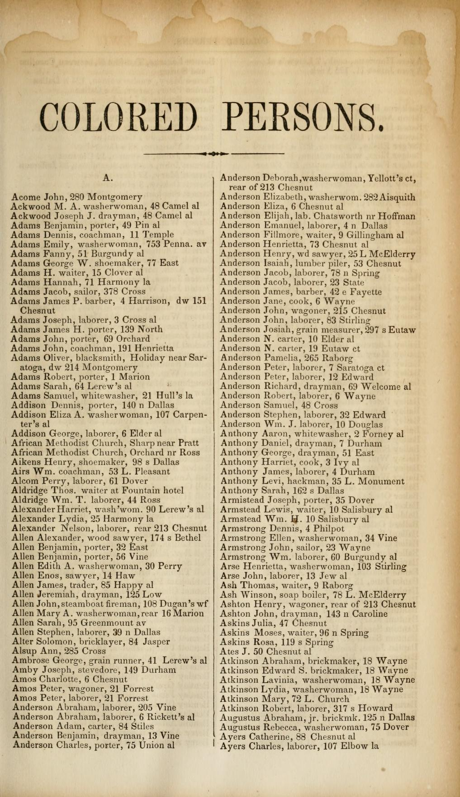
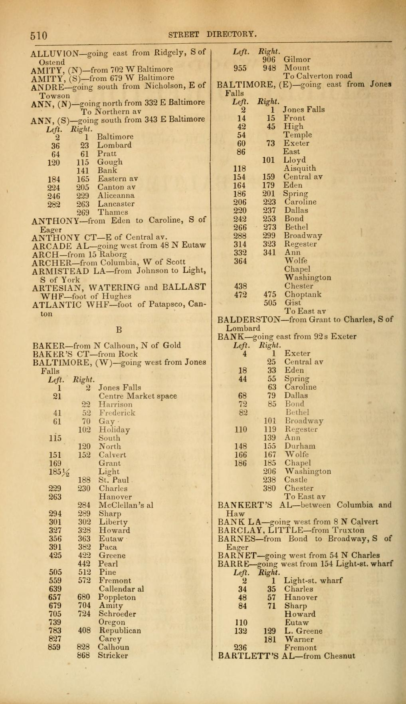
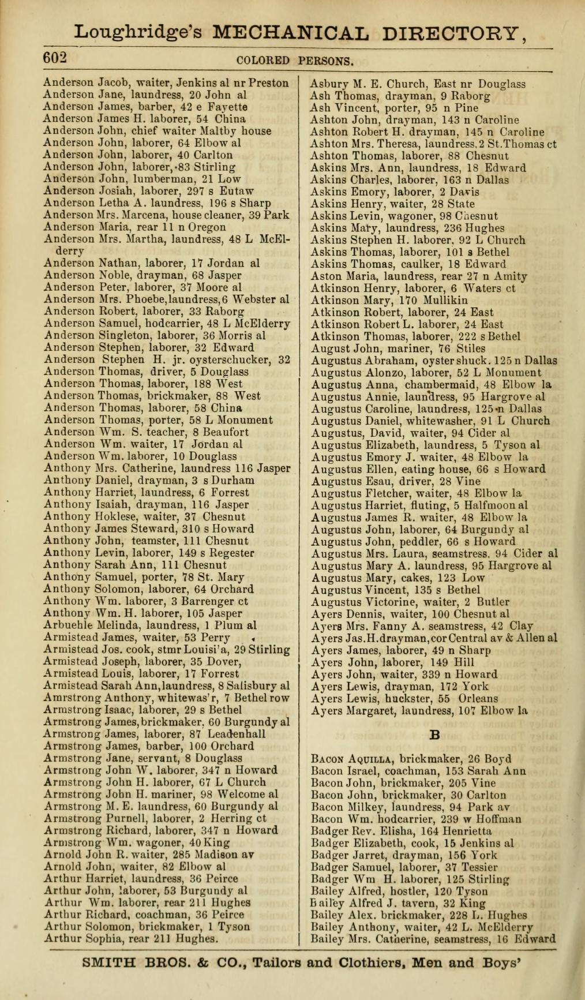

Bibliography
Nine primary sources, spanning 1822 to 1868, each linked to the original scan.
Every figure on this site comes from one of the documents below. All are public and linked. Where a page image is shown, it is the actual page the data was read from.
No separate section. Instead a dagger (†) precedes certain names — 360 of them — which the OCR renders variously as f or t. The meaning is inferred, not stated: this scan's “Directions to the Reader” page, which would carry the legend, is not legible. The reading rests on the flagged entries' occupations (laundress, labourer, drayman, bootblack), their concentration in the alleys, and at least one that is also described outright as coloured. Treat it as a strong inference pending a clean copy of that page. Note also that trailing f. p. and o. t. mark Fell's Point and Old Town, not race. Only 8 of this volume's addresses resolve, so it is parsed but not mapped.
414 residents parsed, 360 flagged

A hand transcription of the “Colored Householders” from Jackson's 1819 directory, giving name, occupation and address. Without it this year would not appear here at all. Addresses are mostly of the form near Bank st, so they place to a corner rather than a block face.
526 residents parsed, 92 placed
The same volume our own OCR handled badly, read properly by a person. It yields 1,061 entries against our scan's 414, and 230 placed against 8. The transcriber's closing note is worth quoting: “My poor eyes got tired of trying to read those little ‘N side W of whatever street.’”
1,061 residents parsed, 230 placed
Prints a separate “Colored Householders” section with a note at the front that they are listed “by themselves.” Addresses are relative, not numbered. Its appendix also carries the full ward ordinance, with boundaries described by street centre lines.
2,724 residents parsed

The first of these volumes with house numbers. Same segregated section, now giving addresses like 13 Lerew's alley.
2,100 residents parsed
Section closes with an explicit END COLORED RESIDENTS, which is what bounds the parse. Also prints the 1851 ward division law.
3,642 residents parsed
The “Colored Persons” section, 31 printed pages beginning at p. 427, giving name, occupation and address for each resident. The backbone of the project.
4,251 residents parsed

The key that makes address-level geocoding possible. For every street it prints the house number standing at each cross street, in Left and Right columns, so an 1860 number can be placed between two named corners without ever being compared to a modern one. The flat OCR destroys this table; it is rebuilt from per-word coordinates.
1,521 anchors across 215 streets

Three years after emancipation. The section runs 64 pages where 1860's ran 31, and lists twice as many people. Its own street directory is richer than 1860's, covering 387 streets.
8,512 residents parsed

Baltimore ward by ward, with white, free colored and slave counts. The only ward-level race breakdown available for 1860: IPUMS does not distribute ward geography in its public complete count. Transcribed from the scan and checked against the printed totals, which reconcile exactly.
20 wards; 25,680 free Black, 2,218 enslaved
A card index of every Baltimore street renaming, and the fix for this project's largest source of silent loss. The streets that failed to geocode were overwhelmingly the alleys the Black population lived on, and most had not been demolished at all — they were renamed. Strawberry became Dallas, Brandy became Perry, Bottle became Dover, Happy became Durham, Honey became Hughes, German became Redwood. 1,460 alias pairs extracted.
1,460 name changes; lifted 1822 from 8 placed to 230
Baltimore by ward, on the same model as 1860 and on the same ward boundaries, which makes the two directly comparable. Unlike the 1860 volume this PDF carries a text layer. Checked against the printed totals, which reconcile exactly, and that check corrected ward 20's enslaved count.
20 wards; 25,442 free Black, 2,946 enslaved
Baltimore street centrelines c.1930 and ward boundaries in period slices. Chosen over modern street data for one reason: it still carries the alleys — Camel, Pin, Welcome — where much of this population lived and which modern data has lost.
20,459 street segments; ward layers 1818–1930
Every step is scripted and the repository is public: github.com/proflouishyman/black-baltimore-1860. It includes the parsers, the geocoders, the transcription check on the census table, and a log of every bug found and what caused it.